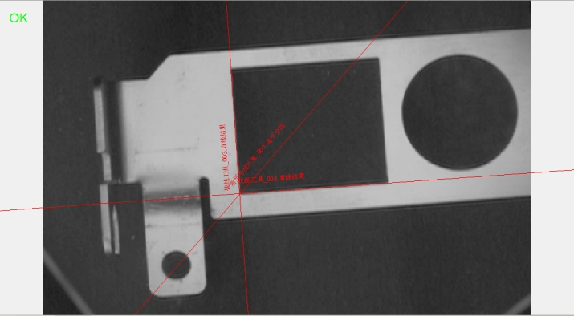

角平分线计算主要用来计算输入的两条直线之间的角度，并输出角平分线直线。
| 分类 | 参数名称 | 参数描述 |
|---|---|---|
| 属性窗口 | 无 | 无 |
| 数据链 | 直线A | 计算角度的两条直线中的第一条。 |
| 直线B | 计算角度的两条直线中的第二条。 | |
| 高级界面 | 无 | 无 |
| 分类 | 参数名称 | 参数描述 |
|---|---|---|
| 监视窗口 | 角平分线 | 输出两条直线的角平分直线。 |
| 执行结果 | 工具执行结果。 | |
| 执行时间 | 工具执行时间。 | |
| 数据链 | 角平分线 | 输出两条直线的角平分直线。 |
将数据链输入的参数直线A与直线B的角度进行平分，输出角平分（直）线，下图为添加view视图里面，显示的角平分线。

参见“\Samples\形状间距及相关点.gvp”。